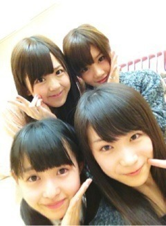
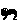

| 2012/10 10 Wed | 256回目*marika |
いつも読んでくださってる方、
初めて読んでくださった方、
コメントしてくださった方、
ありがとうございます！

とまととせいたんとまなつとわたし
せいたんに
「ほんま童顔やなっ」
て何回言われたか

...え？
せいたんと？
同い年だよ？
......見えない？
やかましいわっっっ
真夏も童顔なんだからっ！ぷん
(巻き込む←)
でも私は大人なんだからっ！
...すみません


***
あのパーカーは古着だよー
そして私服だよー
ね、3枚目の写真落差激しい。
でもみなさん気に入ってくださった
みたいでよかった
 ふふ
ふふ
ふふ
***
個握のとき

後ろにいるのはー
みさ先輩とまいまいだー

...
メンバーのブログ読むと、
最近family名募集してるんだね。
今は...まりかふぁむ
ってなってるけど、
私も新しく作りたいなぁ。なんて
というわけでこのタイミングですが！
「まりかふぁむ」から
新しいfamily名を
募集したいと思います

素敵な素敵な名前思いついたら
ぜひ教えてください

では、明日も頑張りまりか

まりか
コメント(242)
2012/10/10 23:30